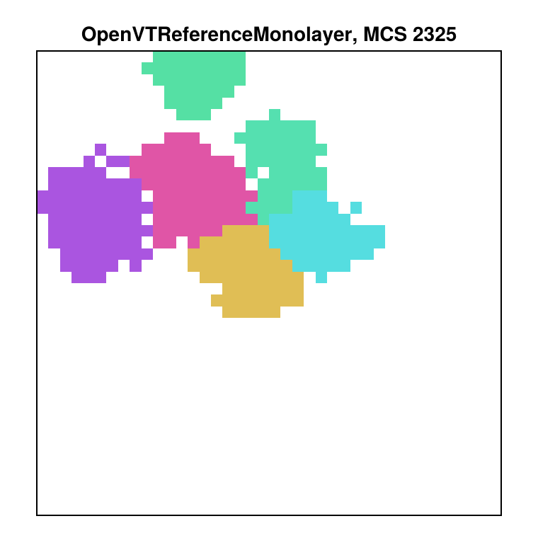
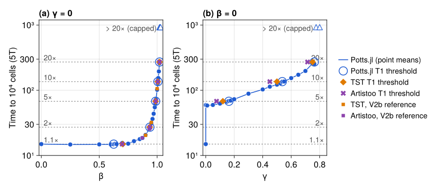
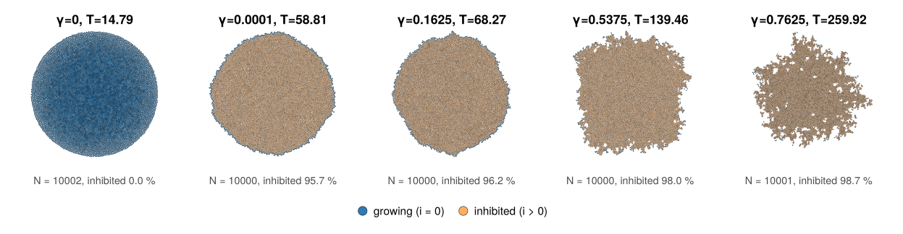
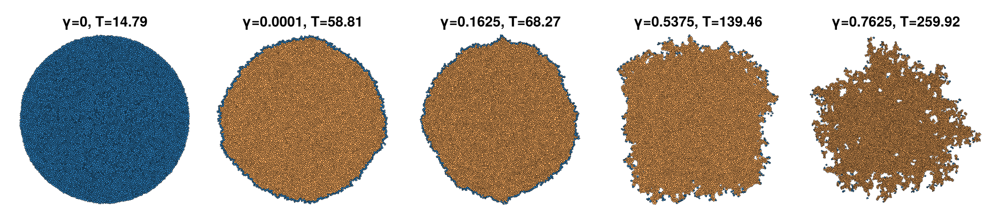

OpenVT monolayer benchmark
The OpenVT consortium compares cell-based simulation frameworks on one shared reference model. A single cell on an unbounded plane grows, divides and founds a monolayer, with optional contact inhibition of growth. The consortium's manuscript defines the model, the protocols, the analysis and the figures that every framework contributes to: OpenVT consortium, Reference Model for the Simulation of a Growing Tissue Monolayer with Contact Inhibition, in preparation (called M below). PottsModels ships the model as OpenVTReferenceMonolayer, and this page is Potts.jl's contribution to M's lineup.
The page shows, in order:
- the model code;
- a minimal run you can paste;
- the results against M: the chain calibration (Figure 2), the 1000-cell distributions (Figure 5), our Figure 1 panel, growth over time (Figures 3 and 8), the inhibition threshold sweeps (Figures 6 and 7, Table 1), the full-run videos, a verdict summary and the table of deviations;
- the details, collapsed: protocol, every verdict, the free-surface schematic (Figure 4), Tables S1 and S5, the differences table and provenance.
Every result comes from a committed record under lib/PottsModels/reproductions/data/15/, made offline (D-146); the page reads the records and reruns nothing but the minimal run. Calibration and growth over time pass every pre-registered target. Three of the seven Figure 5 distribution targets fail. The threshold sweeps pass 15 of 18 targets: the uninhibited colony reaches 10⁴ cells 10 % later than M (just outside the ± 10 % band), which also moves the 1.1× β threshold, and the γ = 10⁻⁴ plateau is 4 % below its band. Every band and rule was frozen before its run; nothing was tuned afterwards.
This is an independent implementation from M's text and tables; it has not been reviewed or endorsed by the consortium.
using Potts, PottsModels
using MakiePotts, CairoMakie
using TOML, Markdown
CairoMakie.activate!(type = "png")
const DATA15 = joinpath(pkgdir(PottsModels), "reproductions", "data", "15")
# a committed record: check the commit quoted in the text against its provenance
function record(dir; commit)
prov = TOML.parsefile(joinpath(DATA15, dir, "provenance.toml"))
@assert startswith(prov["commit"], commit) "$dir: provenance commit is $(prov["commit"])"
@assert prov["dirty_tracked"] === false
return prov
end
# a record's figure, copied next to the built page and shown as an image
function record_figure(dir, file; alt, width = 900)
name = "15_openvt_" * replace(dir, r"[^A-Za-z0-9]+" => "_") * "_" * file
cp(joinpath(DATA15, dir, file), name; force = true)
return HTML("<figure><img src=\"../$name\" alt=\"$alt\" style=\"max-width:100%\" " *
"width=\"$width\"></figure>")
end
# a record's TSV as rows of Dicts
function tsv(dir, file)
lines = filter(!isempty, readlines(joinpath(DATA15, dir, file)))
head = split(lines[1], '\t')
return [Dict(String(h) => String(v) for (h, v) in zip(head, split(l, '\t'))) for l in lines[2:end]]
end
# a verdict table as Markdown (vertical bars inside cells are shown as ∣, underscores
# and asterisks are escaped)
function verdict_table(rows, cols, names)
cell(s) = replace(s, "|" => "∣", "_" => "\\_", "*" => "\\*")
out = "| " * join(names, " | ") * " |\n|" * repeat(":---|", length(names)) * "\n"
for r in rows
out *= "| " * join((cell(get(r, c, "—")) for c in cols), " | ") * " |\n"
end
return Markdown.parse(out)
end
cal = tsv("calibration-2026-10-05", "verdicts.tsv")
f3f8 = tsv("f3-f8-2026-10-08", "verdicts.tsv")
f5 = tsv("f5-2026-10-07", "verdicts.tsv")1. The model
M's model (M §2.1, Table S1) is a cellular Potts model with an area constraint and contact energies, Metropolis acceptance at fluctuation amplitude T, and three cell rules: the reference area grows by α per MCS unless the cell is inhibited (type 1: a = A/A* < β; type 2: free-surface fraction f < γ); a cell divides when its actual area reaches X·A*(0), X ~ N(2, 0.4) drawn per cell; both daughters take half the mother's A*. The @potts_model definition in lib/PottsModels/src/openvt_reference.jl, without its docstring:
@potts_model OpenVTReferenceMonolayer begin
@structural_parameters begin
lattice = (1400, 1400)
end
@kinds medium cell
@parameters begin # Table S1
A₀ = 50.0
λ = 2.0
T = 20.0
α = 50 / 775
μ_X = 2.0
σ_X = 0.4
β = 0.0
γ = 0.0
J[kind, kind] = [0.0 10.0; 10.0 20.0]
end
@variables begin # per cell: reference area, division factor, free surface
A_star(cell) = A₀
X(cell) = 0.0
f(cell) = 1.0
end
@lattice Lattice(lattice; boundary = Closed(), neighborhood = Moore(1))
@relations proposal = Moore(1)
@energy begin
cells(cell) => λ * (volume - A_star)^2
contacts => J[kind, kind′]
end
# the first cell draws its X before its first division check
@before_mcs X ~ ifelse(Pre(X) > 0, Pre(X), randn(μ_X, σ_X; lower = 0.0))
@after_mcs begin # f, then growth unless inhibited (type 1 and type 2)
f ~ ifelse(count(true for _ in contacts) > 0,
count(kind′ == medium for _ in contacts) / count(true for _ in contacts), 1.0)
A_star ~ ifelse((volume / Pre(A_star) >= β) && (f >= γ), Pre(A_star) + α, Pre(A_star))
end
# division on the actual area; each daughter draws its own X
@divide cells(cell) when = volume >= X * A₀, along = RandomPlane(), A_star => Split(),
X => randn(μ_X, σ_X; lower = 0.0)
@sweep Metropolis(; temperature = T)
endσ_X = 0 gives M's deterministic mode, X ≡ 2. A run starts from openvt_reference_state(), one disc of area A*(0) at the lattice centre, and stops with PottsModels.stop_at_cells(n) at the end of the first MCS with at least n cells. Time is in cell cycles of 5T = A*(0)/α = 775 MCS and lengths in R = √(A*(0)/π) = 3.989 px.
2. A minimal run
Three cell cycles on a 120 × 120 lattice, stopped at 64 cells or if a cell comes within 5 sites of the edge:
@named ref = OpenVTReferenceMonolayer(; lattice = (120, 120))
prob = PottsProblem(ref, openvt_reference_state(; lattice = (120, 120)), (0, 3 * 775); seed = 1, capacity = 256)
guards = CallbackSet(PottsModels.edge_guard(5; terminate = true), PottsModels.stop_at_cells(64))
sol = solve(prob, SequentialCPM(); saveat = 0:15:(3 * 775), callback = guards)
(retcode = sol.retcode, mcs = sol.t[end], cells = count(>(0), sol.u[end].cell.volume))(retcode = SciMLBase.ReturnCode.Success, mcs = 2325, cells = 6)The colony at the stop, one colour per cell, and its O2 rows (M's per-cell output: the free-surface fraction f and the area fraction a):
fig = Figure(; size = (380, 380))
ax = Axis(fig[1, 1]; aspect = DataAspect(), title = "OpenVTReferenceMonolayer, MCS $(sol.t[end])")
hidedecorations!(ax)
pottsplot!(ax, renderframe(sol); encoding = CellIdentityEncoding(), medium_color = :white)
limits!(ax, 40, 80, 40, 80)
fig
o2 = PottsModels.openvt_snapshot(sol.u[end])
(n = length(o2.f), mean_f = sum(o2.f) / length(o2.f), mean_a = sum(o2.a) / length(o2.a))(n = 6, mean_f = 0.7141467569647727, mean_a = 0.9782883205865556)3. Results
Each result names its record (data/15/…), the commit and machine it ran on, and the figure file the record's plotting script drew. The verdict rules and bands were frozen before each run (D-148, D-168, D-173, D-174, D-175).
Figure 2: mechanical calibration on 1D cell chains
An 11-cell chain, compressed to half its target area during a burn-in, relaxes after t = 0 towards 10 cell diameters (CD); the time T at which the mean crosses 90 % of the relaxation is the framework's time unit (panel b, Table S5). Panels d and e test the calibrated T, without refitting, on a 21-cell chain. Dashed: the spring–dashpot reference. Record data/15/calibration-2026-10-05/ (ROADMAP P6.15b), commit 30c39601, Apple M1 Pro, 4 threads, 14 s; figure fig2_bde.png.

let rows = filter(r -> r["result"] in ("PASS", "FAIL"), cal)
Markdown.parse("**PASS: $(count(r -> r["result"] == "PASS", rows)) of $(length(rows)) calibration rows** " *
"(V6–V8). T = 156 MCS at λ = 2 against Table S5's 155, so one cycle is 5T = 775 MCS.")
endPASS: 22 of 22 calibration rows (V6–V8). T = 156 MCS at λ = 2 against Table S5's 155, so one cycle is 5T = 775 MCS.
Figure 5: 100 runs of 1000 cells
M's Figure 5 pools 100 stochastic runs of case (b) at 10³ cells: histograms and cumulative counts of the free-surface fraction f and of a = A/A*, stacked by distance from the initial cell. Rows: the consortium's TST runs (M's data), Potts.jl case (b) (seeds 15001–15100) and the γ = 10⁻⁴ negative control (seeds 15501–15520). The verdict rules were also run on the consortium's TST and Morpheus data, and both pass all seven rows. Record data/15/f5-2026-10-07/ (ROADMAP P6.15e), commit 3af81ae8, AMD Ryzen AI Max+ 395 PC, 12 threads, 120 runs in 468 s; figure fig5.png.

The bulk agrees (f = 0 share 0.888, a peak 0.865, mean a 0.849, mean f 0.039); the rim does not: V4.2, V4.3 and V4.5 fail (see Deviations). The control fails as required.
Figure 1: the Potts.jl panel
M's Figure 1 shows one 45 × 45 mm close-up per framework at 10⁴ cells. Ours is a 64 × 64-site block of case (a), run 1 (seed 15701, 1400² lattice), at its stop: MCS 11600, N = 10001. As in the CompuCell3D, TST and Artistoo close-ups, each cell is coloured by its area (coolwarm, scaled to the panel's own cell-area min–max; the areas come from the full state, so cells cut by the window keep their full area), with thin black boundaries between cells (D-185). The scale limits are our provisional reading. The banner colour RGB(8, 29, 88) is our proposal for Potts.jl. Record data/15/f1-f4-2026-10-08/ (ROADMAP P6.15h), commit c6ca4bc4, AMD Ryzen AI Max+ 395 PC, one thread; figure fig1.png, drawn by plot_f1.jl from window.tsv and window_cells.tsv. The rerun's stop equals case (a) run 1 of the Figure 3/8 record.

The whole colony at the same state, the panel's block shaded (fig1_colony.png):

Figures 3 and 8: growth over time
Figure 3 follows a colony to 10³ cells (N, radius r and area A against time in cycles): case (f), run 1, deterministic X ≡ 2 (blue) and the 100 runs of case (b) (red), with the consortium's TST runs above for comparison. Figure 8's seven panels follow cases (a) (uninhibited) and (e) (β = 0.8), 10 runs each to 10⁴ cells, with the bulk and boundary-limited growth laws and the CompuCell3D and Morpheus curves of M's draft (earlier β = 0.8 runs in their own cycle lengths, footnoted). Record data/15/f3-f8-2026-10-08/ (ROADMAP P6.15f), commit a64ae188, AMD Ryzen AI Max+ 395 PC, 12 threads, 240 runs in 9.2 core-hours; figures fig3.png and fig8.png.


Every pre-registered row passes and every negative control fails. Case (f) reproduces TST's synchronous doublings and reaches 10³ cells at 9.97 cycles against 10.01; its area is the widest margin used (14.3 % above TST at t = 8.5, band 20 %). Case (a) reaches 10⁴ cells at 15.17 cycles, later than M's 13.57 (V1 in Deviations).
Figures 6 and 7, Table 1: threshold sweeps
Figure 6 plots the mean time to 10⁴ cells against β (γ = 0, case (c)) and against γ (β = 0, case (d)), with dashed lines at 1.1, 2, 5, 10 and 20 times M's uninhibited time of 13.57 cycles. Table 1 lists the threshold at which each multiple is reached; Figure 7 shows the colony at 10⁴ cells at γ = 0, 10⁻⁴ and the three γ thresholds, growing cells blue and inhibited cells orange. Rings: the Potts.jl thresholds; diamonds and crosses: TST's and Artistoo's Table 1 values. Record data/15/sweeps-2026-10-08/ (ROADMAP P6.15g), commit 41fb2ba6, AMD Ryzen AI Max+ 395 PC, 12 threads, 160 runs (6 capped at 20×) in 68.7 core-hours, on BoundarySiteCPM (equal in law to SequentialCPM, D-177); figures fig6.png and fig7.png, thresholds table1.tsv.

let t1 = tsv("sweeps-2026-10-08", "table1.tsv")
v(p, m) = (r = filter(r -> startswith(r["target"], (p == "beta" ? "V2." : "V3.") * replace(m, ".0" => "") * "x"), sweeps);
isempty(r) ? "—" : only(r)["result"])
val(s) = isempty(s) ? "—" : s
out = "| Parameter | Multiple (cycles) | Potts.jl | TST | Artistoo | Band | Verdict |\n|---|---|---|---|---|---|---|\n"
for r in t1
p = r["parameter"] == "beta" ? "β" : "γ"
verdict = v(r["parameter"], r["multiple"])
out *= "| $p | $(replace(r["multiple"], r"\.0$" => ""))× ($(r["tau_cycles"])) | $(val(r["threshold"])) | $(val(r["TST"])) | " *
"$(val(r["Artistoo"])) | $(val(r["band"])) | $(verdict == "FAIL" ? "**FAIL**" : verdict) |\n"
end
Markdown.parse(out)
end| Parameter | Multiple (cycles) | Potts.jl | TST | Artistoo | Band | Verdict |
|---|---|---|---|---|---|---|
| β | 1.1× (14.927) | 0.625 | 0.7037 | 0.698182 | [0.667, 0.724] | FAIL |
| β | 2× (27.14) | 0.9375 | 0.9361 | 0.937665 | [0.916, 0.963] | PASS |
| β | 5× (67.85) | 0.9875 | 0.9867 | 0.987636 | [0.9817, 0.9966] | PASS |
| β | 10× (135.7) | 1.007 | 1.006 | 1.005947 | [1.001, 1.016] | PASS |
| β | 20× (271.4) | 1.0212 | 1.02 | 1.020946 | [1.015, 1.029] | PASS |
| γ | 1.1× (14.927) | — | — | — | — | PASS |
| γ | 2× (27.14) | — | — | — | — | PASS |
| γ | 5× (67.85) | 0.1625 | 0.12 | 0.07562 | [0.026, 0.17] | PASS |
| γ | 10× (135.7) | 0.5375 | 0.5 | 0.450193 | [0.4, 0.55] | PASS |
| γ | 20× (271.4) | 0.7625 | 0.75 | 0.715045 | [0.665, 0.81] | PASS |
Table 1 uses M's rule: the threshold is the sampled point whose mean time is nearest the multiple, on the final bisection bracket (6 runs at each end). Against our own uninhibited time (14.945 cycles) the same rule gives β = 0.80, 0.95, 0.99, 1.01 and 1.02 and γ = 0.20, 0.60 and 0.75 (information only, in table1.tsv). The γ rows at 1.1× and 2× are "—", as for every lattice framework: the time jumps from 14.9 to 58.8 cycles between γ = 0 and γ = 10⁻⁴.

The same five final states as lattice stills, one colour per cell (fig7_cells.png): at high γ growth is confined to cells with free surface, so the rim roughens and the colony becomes porous, as in TST's row of M's Figure 7.

15 of 18 pre-registered rows pass; V1, V2.1.1x and V3b fail (see Deviations), and all three negative controls fail, as required. Nothing was tuned: no band, rule, seed or protocol changed after the run.
- V1 (time to 10⁴ cells at β = γ = 0, 10 runs): 14.945 cycles against the band [12.213, 14.927], 0.12 % past its upper edge (+10.1 % on 13.57).
- V2.1.1x (β threshold at 1.1×): 0.625 against [0.667, 0.724]. It follows from V1: the 1.1× time, 14.927 cycles, lies on our flat low-β plateau (14.7–15.1 cycles for β ≤ 0.65), so the crossing is set by run-to-run noise. Every β threshold from 2× up is inside its band and within 0.002 of TST.
- V3b (time at γ = 10⁻⁴, 5 runs): 58.755 cycles against [61, 70], 3.7 % below. The whole γ curve lies 4–11 % below TST's samples, yet every γ threshold passes.
The leading candidate for all three is the division rule: Potts.jl, like M, divides on the actual area, TST on the target area (C13; Q20 on our open question list). It is unverified, and for V3b it is a weaker fit: we are slower than TST at γ = 0 but faster when only the rim grows, which a plain rate offset cannot cause.
The full-run videos
Run 1 of each case, one frame every 39 MCS to the stop, one colour per cell, no outlines (release reproductions-2026-10-08-openvt-f3f8 and reproductions-2026-10-07-openvt-f5-cells-v2).
Verdicts at a glance
let
pre(rows) = filter(r -> r["result"] in ("PASS", "FAIL") && get(r, "case", "") != "control" &&
!occursin("must FAIL", get(r, "band", "")) && !occursin("(all rows)", r["target"]), rows)
tally(rows) = (p = count(r -> r["result"] == "PASS", rows); "$p of $(length(rows))")
fails(rows) = (f = [String(first(split(r["target"]))) for r in rows if r["result"] == "FAIL"]; isempty(f) ? "—" : "**" * join(f, ", ") * "**")
calr = filter(r -> r["result"] in ("PASS", "FAIL"), cal)
f3 = pre(filter(r -> startswith(r["target"], "F3") && r["case"] in ("f", "b"), f3f8))
f8 = pre(filter(r -> (startswith(r["target"], "V5.") || startswith(r["target"], "F8.")) && r["case"] in ("a", "e"), f3f8))
v4 = pre(filter(r -> startswith(r["target"], "V4.") && r["case"] == "b", f5))
ctl = filter(r -> r["case"] == "control" || occursin("must FAIL", get(r, "band", "")), f3f8)
sw = pre(sweeps)
swc = filter(r -> occursin("must FAIL", r["band"]), sweeps)
Markdown.parse("""
| Item | Pre-registered rows passing | Failing | Negative controls |
|---|---|---|---|
| Figure 2, Table S5 (calibration) | $(tally(calr)) | $(fails(calr)) | — |
| Figure 3 (cases f, b) | $(tally(f3)) | $(fails(f3)) | $(count(r -> r["result"] == "FAIL", ctl)) of $(length(ctl)) fail, as required |
| Figure 5 (case b) | $(tally(v4)) | $(fails(v4)) | the γ = 10⁻⁴ control fails V4.4 and V4.6, as required |
| Figure 8 (cases a, e) | $(tally(f8)) | $(fails(f8)) | — |
| Figures 6, 7 and Table 1 (sweeps, with V1) | $(tally(sw)) | $(fails(sw)) | $(count(r -> r["result"] == "FAIL", swc)) of $(length(swc)) fail, as required |
""")
end| Item | Pre-registered rows passing | Failing | Negative controls |
|---|---|---|---|
| Figure 2, Table S5 (calibration) | 22 of 22 | — | — |
| Figure 3 (cases f, b) | 9 of 9 | — | 4 of 4 fail, as required |
| Figure 5 (case b) | 4 of 7 | V4.2, V4.3, V4.5 | the γ = 10⁻⁴ control fails V4.4 and V4.6, as required |
| Figure 8 (cases a, e) | 9 of 9 | — | — |
| Figures 6, 7 and Table 1 (sweeps, with V1) | 15 of 18 | V1, V2.1.1x, V3b | 3 of 3 fail, as required |
Deviations
One row per failed or provisional target (D-154). The columns are our value, M's value, the suspected cause and the status of the question to the authors: "not asked" (the question is on our open question list, spec 15 §7) or "not an author question". No band was relaxed. The readings of M and every figure choice are in the differences table in the Details.
| Item | Ours | Manuscript (M) | Suspected cause | Author question |
|---|---|---|---|---|
| V4.2 peak of nonzero f (FAIL) | 0.425 (100 runs, 11,226 cells with f > 0); 0.395–0.435 for smoothing windows of 1–11 bins; mean nonzero f 0.346 | 0.25–0.35 (TST and Morpheus pooled); TST alone 0.295, mean nonzero f 0.288 | leading: TST departs from the manuscript: divides on target area (the released TST OpenVT model, sbr-shakibi/Tissue-Simulation-Toolkit@7ae1636, src/models/openvt-monolayer-type1-tst.cpp:169); Potts.jl follows M and divides on actual area (C13). Not the Morpheus f definition or σX (C17): TST alone uses our f and σX = 0.4 and passes. Ruled out on 20 runs each: the division axis and a connectivity constraint | not asked; on our open question list as Q20 (leading) and Q23 |
| V4.3 max f (FAIL) | 0.847; 606 of 11,226 rim cells (5.4 %) above 0.56 | at most 0.56, no cell above (TST max 0.553) | the same upward shift of the rim cells' f as V4.2; causes as for V4.2. Leading: TST departs from the manuscript: divides on target area (the released TST OpenVT model, sbr-shakibi/Tissue-Simulation-Toolkit@7ae1636, src/models/openvt-monolayer-type1-tst.cpp:169) (C13) | not asked; on our open question list as Q20 (leading) and Q23 |
| V4.5 range of a (FAIL) | 0.066–1.130; 30 of 100,029 cells below 0.42, all small interior cells born shortly before, 10 of them sister pairs | 0.42–1.09; TST 0.425–1.092 with no cell below 0.42 | squeezed young daughters, cause unresolved. Leading candidate: TST departs from the manuscript: divides on target area (the released TST OpenVT model, sbr-shakibi/Tissue-Simulation-Toolkit@7ae1636, src/models/openvt-monolayer-type1-tst.cpp:169), which changes the daughters' state at birth (C13). A connectivity constraint raises the minimum but not the count | not asked; on our open question list as Q20 (leading) and Q24 |
| V1 time to 10⁴ cells, uninhibited, sweeps (FAIL) | 14.945 cycles (β = γ = 0, 10 runs, 14.48–15.31, sd 0.27), 0.12 % above the band's upper edge 14.927, +10.1 % on 13.57; our low-β plateau 14.72–14.77 for β = 0.25–0.6 | 13.57 cycles (PhysiCell's γ = 0 value), band ± 10 % = 12.213–14.927; TST plateau 13.77, Artistoo 13.856 | as for the Figure 3/8 measurement below (15.17 cycles with SequentialCPM on other seeds; the difference, 0.22 cycles, is about 1.9 standard errors, consistent with D-177). Leading candidate: TST departs from the manuscript: divides on target area (the released TST OpenVT model, sbr-shakibi/Tissue-Simulation-Toolkit@7ae1636, src/models/openvt-monolayer-type1-tst.cpp:169); we follow M and divide on actual area (C13) | not asked; on our open question list as Q20 |
| V2.1.1x β threshold at 1.1× (FAIL) | 0.625 (bracket 0.625 / 0.6375, 14.831 / 15.120 cycles over 6 runs each); against our own uninhibited time the rule gives 0.80 (information) | lattice spread 0.687–0.704 (TST 0.7037, Artistoo 0.698); band 0.667–0.724 | a consequence of V1, as D-174 anticipated: the 1.1× time 14.927 lies on our flat low-β plateau (14.7–15.1 for β ≤ 0.65), so its first crossing is set by run-to-run noise (sd 0.27 cycles), not by the inhibition curve. The 2×–20× β thresholds pass, within 0.002 of TST | not asked; on our open question list as Q20 |
| V3b time to 10⁴ cells at γ = 10⁻⁴ (FAIL) | 58.755 cycles (5 runs, 58.42–59.11, sd 0.25), 3.7 % below the band's lower edge 61; −4.3 % on TST | TST 61.37 (γ = 10⁻⁴, one run), Artistoo 63.09 (γ = 0.0195); band 61–70 | unverified. Only cells with free surface grow here, so this measures rim-limited growth; we are faster than TST here but slower at γ = 0 (V1), which a plain rate offset cannot cause. Candidates: the division rule, where TST departs from the manuscript: divides on target area (the released TST OpenVT model, sbr-shakibi/Tissue-Simulation-Toolkit@7ae1636, src/models/openvt-monolayer-type1-tst.cpp:169) (C13), which changes rim cell shapes (V4.2 and V4.3 point the same way), and the band, which sits 0.6 % below TST's single run. Every γ threshold passes | not asked; on our open question list as Q20 |
| V1 time to 10⁴ cells, uninhibited, Figure 3/8 record | 15.17 cycles (case (a), 10 runs, 14.92–15.49); 9 of 10 runs above the band; case (e) at β = 0.8: 16.26 | 13.57 cycles (PhysiCell's γ = 0 value), band ± 10 % = 12.21–14.93; TST low-β plateau 13.61–13.86; TST at β = 0.8: 16.15 | about 11.8 % slow. The gap opens beyond 10³ cells (TST takes about 3.4–3.6 cycles from 10³ to 10⁴ cells, we take 4.6–4.8), past the Figure 3 window. Leading candidate, as for V4: TST departs from the manuscript: divides on target area (the released TST OpenVT model, sbr-shakibi/Tissue-Simulation-Toolkit@7ae1636, src/models/openvt-monolayer-type1-tst.cpp:169); we follow M and divide on actual area (C13) | not asked; on our open question list as Q20, and Q17 (whether 13.57 is pooled or one framework's value) |
| F1 panel colour scale (provisional) | cells coloured by area with coolwarm, scaled to the panel's own cell-area min–max (areas from the full state); thin black pixel-edge boundaries; white medium | the CompuCell3D, TST and Artistoo close-ups colour cells blue to red by area (coolwarm) with thin boundaries; the limits of their colour scales are not stated | the style follows the other frameworks' panels (D-185); the scale limits are our provisional reading | not asked; on our open question list as Q10 (the colour variable and its limits) and Q18 (the Potts.jl colour, RGB(8, 29, 88) proposed) |
Reading the division rows. Where we differ from TST, the manuscript is the reference (M over code). Our model follows M: a cell divides when its actual area reaches X·A*(0), both daughters take half the mother's A*, each redraws X, and every parameter is Table S1's. TST departs from M here: it divides on target area (the released TST OpenVT model, sbr-shakibi/Tissue-Simulation-Toolkit@7ae1636, src/models/openvt-monolayer-type1-tst.cpp:169).
The other frameworks. CompuCell3D, Morpheus and Artistoo each depart from Table S1 in places. CompuCell3D sums contact energy over 20 neighbours and uses λ = 10 and A* = 25; Morpheus and Artistoo use a cell–medium J of 20 and λ = 20 (Artistoo also A* = 25), and Morpheus sets the daughters' A0 to their actual area. Three of the four thus have stronger cell–medium adhesion or a stiffer area term than Table S1, which flattens rims, so our Table S1 rim values (V4.2, V4.3) may be the faithful ones.
The released TST stops at 1000 cells (max_cell_count = 1000), so which build produced its curves beyond 10³ cells is not known; this is Q23 on our open question list.
4. Details
Protocol, every verdict, Figure 4, Tables S1 and S5, the differences table and provenance (click to open)
Protocol
- Rules (M §2.1). Growth: $\mathrm{d}A^*_i/\mathrm{d}t = \alpha$ unless inhibited. Type 1: a cell grows only while $a_i = A_i/A^*_i \ge \beta$. Type 2: only while its free-surface fraction $f_i \ge \gamma$, the share of its unlike contacts that face the medium. Both must hold. Growth and division are decoupled: an inhibited cell may still divide. Division: when the actual area reaches $X_i A^*(0)$, $X_i \sim N(2, 0.4)$, both daughters take half the mother's reference area.
- The free-surface fraction f is the cell's medium contact pairs over all its unlike contact pairs on the Moore(1) neighbourhood, as drawn in M's Figure 4. It is updated once per MCS, after the sweep, together with growth.
- The neighbour number n of M's output files is the number of distinct cells among the Moore(1) neighbours of a cell's boundary sites (
PottsModels.openvt_frame). - The plane is modelled by a closed lattice large enough that the colony never reaches its edge: 400² for 10³ cells, 1400² for 10⁴ cells and 1800² for the γ sweep, with
edge_guard(5; terminate = true)stopping a run that comes within 5 sites of the edge. No run did. - Every run uses
SequentialCPM(; proposal = Moore(1))and saves every 39 MCS (≈ 1/20 cycle) and at the stop. The sweeps useBoundarySiteCPM, equal in law (D-177). - The calibration follows the CPM frameworks: 5-site-high periodic strip, CD = 10 px, both chain ends free, 100 replicates per λ, a 100-MCS burn-in.
The cases follow M's naming:
| Case | Parameters | Stop | Used in |
|---|---|---|---|
| (a) | β = γ = 0 (uninhibited) | 10⁴ cells | Figures 1 and 8 |
| (b) | β = γ = 0, stochastic X | 10³ cells | Figures 3 and 5 |
| (c) | β swept, γ = 0 | 10⁴ cells | Figure 6, Table 1 |
| (d) | γ swept, β = 0 | 10⁴ cells | Figures 6 and 7, Table 1 |
| (e) | β = 0.8, γ = 0 | 10⁴ cells | Figure 8 |
| (f) | β = γ = 0, X ≡ 2 (deterministic) | 10³ cells | Figure 3 |
Two negative controls run alongside: γ = 10⁻⁴, which arrests interior cells and must fail the growth and distribution targets, and case (b) against the synchrony rule that only the deterministic case (f) can meet.
The sweeps (Figure 6, Table 1, Figure 7; D-174). M's Figure 6 plots the mean time to 10⁴ cells against β (γ = 0, case (c)) and γ (β = 0, case (d)), with dashed lines at 1.1, 2, 5, 10 and 20 times the uninhibited time of 13.57 cycles; Table 1 lists the thresholds where those multiples are reached (lattice frameworks: β = 0.687–0.704, 0.936–0.943, 0.9867–0.9916, 1.006–1.011, 1.020–1.024; γ = 0.076–0.12, 0.45–0.50, 0.715–0.76 at 5, 10 and 20 times). Figure 7 shows the colony at 10⁴ cells for each γ threshold, cells coloured growing or inhibited. The Potts.jl sweep is pre-registered: an adaptive grid with bisection near each threshold, β on 1400² and γ on 1800² lattices, runs capped at 20× (210 335 MCS), with targets V1, V2, V2b, V3 and V3b and three negative controls. The record's sampling: a grid of 74 runs (10 at β = 0, 5 at the V2b points and at γ = 10⁻⁴, 1 elsewhere), two bisection steps (16 runs), then both final bracket ends topped up to 6 runs (70 runs): 160 runs, 6 of them capped. A run stops at the end of the first MCS with at least 10⁴ cells or at the cap; no cell came closer than 171 sites to the edge. Seeds are 160 000 000 (β) or 170 000 000 (γ) + 100 q + k, q the parameter × 10⁴. The verdict rules were run once on the record; the frozen test recomputes them from the committed files.
Every verdict
Calibration (Figure 2, Table S5), from calibration-2026-10-05/verdicts.tsv:
verdict_table(cal, ["target", "paper", "ours", "tolerance", "result"],
["Target", "Table S5 or lattice spread", "Potts.jl", "Band", "Verdict"])| Target | Table S5 or lattice spread | Potts.jl | Band | Verdict |
|---|---|---|---|---|
| V6 T(λ = 1), MCS | Table S5: 290 | 297 (1.024 × S5) | ±15 %: [246.5, 333.5] | PASS |
| V7 run covers 5 T (λ = 1) | — (run validity) | 5T = 1485, run to 2030 | 5T ≤ 7 T_S5 | PASS |
| V7 MSE vs spring–dashpot (λ = 1) | Table S5: 7.57e-4 | 1.28e-3 (1.69 × S5) | ≤ 3 × S5 = 2.27e-3 | PASS |
| V6 T(λ = 2), MCS | Table S5: 155 | 156 (1.006 × S5) | ±15 %: [131.8, 178.2] | PASS |
| V7 run covers 5 T (λ = 2) | — (run validity) | 5T = 780, run to 1085 | 5T ≤ 7 T_S5 | PASS |
| V7 MSE vs spring–dashpot (λ = 2) | Table S5: 2.66e-3 | 1.02e-3 (0.38 × S5) | ≤ 3 × S5 = 7.99e-3 | PASS |
| V7 w₁₁(0.5 T) (λ = 2), CD | lattice spread 7.83–7.87 (TST, Morpheus-J10, Artistoo); reference 7.9 | 7.859 | spread ± 0.1: [7.73, 7.97] | PASS |
| V7 w₁₁(2.0 T) (λ = 2), CD | lattice spread 9.78–9.8 (TST, Morpheus-J10, Artistoo); reference 9.77 | 9.794 | spread ± 0.1: [9.68, 9.9] | PASS |
| V6 T(λ = 3), MCS | Table S5: 110 | 111 (1.009 × S5) | ±15 %: [93.5, 126.5] | PASS |
| V7 run covers 5 T (λ = 3) | — (run validity) | 5T = 555, run to 770 | 5T ≤ 7 T_S5 | PASS |
| V7 MSE vs spring–dashpot (λ = 3) | Table S5: 4.43e-3 | 4.06e-3 (0.92 × S5) | ≤ 3 × S5 = 1.33e-2 | PASS |
| V6 T(λ = 5), MCS | Table S5: 75 | 77 (1.027 × S5) | ±15 %: [63.8, 86.2] | PASS |
| V7 run covers 5 T (λ = 5) | — (run validity) | 5T = 385, run to 525 | 5T ≤ 7 T_S5 | PASS |
| V7 MSE vs spring–dashpot (λ = 5) | Table S5: 1.38e-2 | 1.05e-2 (0.76 × S5) | ≤ 3 × S5 = 4.13e-2 | PASS |
| V6 T strictly decreasing in λ | 290 > 155 > 110 > 75 | 297 > 156 > 111 > 77 | strict | PASS |
| V8 w₂₁(1 T) (λ = 2, T = 156), CD | lattice spread 15.9–16.25 (CC3D, Morpheus-J10, TST, Artistoo) | 15.959 | spread ± 0.15: [15.75, 16.4] | PASS |
| V8 w₂₁(5 T) (λ = 2, T = 156), CD | lattice spread 19.2–19.57 (CC3D, Morpheus-J10, TST, Artistoo) | 19.281 | spread ± 0.15: [19.05, 19.72] | PASS |
| V8 w₂₁(10 T) (λ = 2, T = 156), CD | lattice spread 19.9–19.96 (CC3D, Morpheus-J10, TST, Artistoo) | 19.889 | spread ± 0.15: [19.75, 20.11] | PASS |
| V8 inner w₁₁(1 T) (λ = 2, T = 156), CD | lattice spread 7.2–7.51 (CC3D, Morpheus-J10, TST, Artistoo) | 7.241 | spread ± 0.15: [7.05, 7.66] | PASS |
| V8 inner w₁₁(5 T) (λ = 2, T = 156), CD | lattice spread 9.46–9.71 (CC3D, Morpheus-J10, TST, Artistoo) | 9.514 | spread ± 0.15: [9.31, 9.86] | PASS |
| V8 inner w₁₁(10 T) (λ = 2, T = 156), CD | lattice spread 9.92–9.96 (CC3D, Morpheus-J10, TST, Artistoo) | 9.925 | spread ± 0.15: [9.77, 10.11] | PASS |
| V8 plateau end (w̄₂₁ ≥ w̄₂₁(0) + 0.05), T | 0.15–0.22 T (lattice spread) | 0.173 (27 MCS; w̄₂₁(0) = 14.501) | [0.1, 0.3] T | PASS |
| P8 per-run crossing (λ = 1), MCS | — (Morpheus Event) | median 290, mean 291.8 ± 33.2 (SD), 100/100 cross | — | info |
| P8 per-run crossing (λ = 2), MCS | — (Morpheus Event) | median 154, mean 156.1 ± 13.7 (SD), 100/100 cross | — | info |
| P8 per-run crossing (λ = 3), MCS | — (Morpheus Event) | median 112, mean 111.2 ± 8.6 (SD), 100/100 cross | — | info |
| P8 per-run crossing (λ = 5), MCS | — (Morpheus Event) | median 76, mean 76.9 ± 4.9 (SD), 100/100 cross | — | info |
| P12 cycle 5 × T(2), MCS | 775 (α, M) | 780 | — | info |
Figure 3 (L = log₂ N; r̄, Ā; t̄_s the time to 10³ cells; sync(k) the fraction of runs with exactly 2ᵏ cells at t = k + 0.5), from f3-f8-2026-10-08/verdicts.tsv:
cols = ["target", "case", "paper", "ours", "band", "result"]
hdr = ["Target", "Case", "Consortium (TST)", "Potts.jl", "Band", "Verdict"]
verdict_table(filter(r -> startswith(r["target"], "F3") && r["case"] in ("f", "b") &&
!occursin("must FAIL", r["band"]), f3f8), cols, hdr)| Target | Case | Consortium (TST) | Potts.jl | Band | Verdict |
|---|---|---|---|---|---|
| F3.1 max ∣L − L_TST∣ on t = 0.5:1:8.5 (log₂ N) | f | TST No_CI deterministic: L = 0.0, 1.0, 2.0, 3.0, 4.0, 5.0, 6.0, 7.0, 8.0 | 0.0 | ≤ 0.3 | PASS |
| F3.2 t̄_s / t̄_s,TST (time to 1000 cells) | f | TST No_CI deterministic: t̄_s = 10.01 cycles | 0.9954 | [0.95, 1.05] | PASS |
| F3.3 max ∣r̄/r̄_TST − 1∣ on t = 4.5:1:8.5 and at the end | f | TST No_CI deterministic: r̄ = 3.817, 5.705, 8.459, 12.38, 17.46; r̄_e = 0.9265 | 0.06905 | ≤ 0.1 | PASS |
| F3.4 max ∣Ā/Ā_TST − 1∣ on t = 4.5:1:8.5 and at the end | f | TST No_CI deterministic: Ā = 39.23, 96.43, 220.3, 479.3, 957.8; Ā_e = 2.702 | 0.1435 | ≤ 0.2 | PASS |
| F3.5 min over k = 0:3 of sync(k) | f | TST No_CI deterministic: sync = 1.0, 1.0, 1.0, 1.0 | 1.0 | ≥ 0.9 | PASS |
| F3.1 max ∣L − L_TST∣ on t = 0.5:1:8.5 (log₂ N) | b | TST No_CI stochastic: L = 0.09, 1.072, 2.05, 3.114, 4.111, 5.156, 6.182, 7.188, 8.162 | 0.1343 | ≤ 0.3 | PASS |
| F3.2 t̄_s / t̄_s,TST (time to 1000 cells) | b | TST No_CI stochastic: t̄_s = 10.24 cycles | 1.012 | [0.95, 1.05] | PASS |
| F3.3 max ∣r̄/r̄_TST − 1∣ on t = 4.5:1:8.5 and at the end | b | TST No_CI stochastic: r̄ = 3.928, 5.911, 8.795, 12.92, 18.33; r̄_e = 1.057 | 0.04476 | ≤ 0.1 | PASS |
| F3.4 max ∣Ā/Ā_TST − 1∣ on t = 4.5:1:8.5 and at the end | b | TST No_CI stochastic: Ā = 42.18, 104.5, 243.1, 530.5, 1068.0; Ā_e = 3.522 | 0.09172 | ≤ 0.2 | PASS |
The negative controls, which must fail:
verdict_table(filter(r -> occursin("must FAIL", r["band"]), f3f8), cols, hdr)| Target | Case | Consortium (TST) | Potts.jl | Band | Verdict |
|---|---|---|---|---|---|
| F3.1 max ∣L − L_TST∣ on t = 0.5:1:8.5 (log₂ N) | control | TST No_CI stochastic: L = 0.09, 1.072, 2.05, 3.114, 4.111, 5.156, 6.182, 7.188, 8.162 | 1.426 | ≤ 0.3 (control: must FAIL) | FAIL |
| F3.2 t̄_s / t̄_s,TST (time to 1000 cells) | control | TST No_CI stochastic: t̄_s = 10.24 cycles | 2.021 | [0.95, 1.05] (control: must FAIL) | FAIL |
| V5.1 slope of L on t = 4.5:1:8.5 | control | TST No_CI: slope 1.000 (det.), 1.013 (stoch.) | 0.6467 | [0.9, 1.1] (control: must FAIL) | FAIL |
| F3.5 min over k = 0:3 of sync(k) | b | TST No_CI stochastic: sync = 0.91, 0.62, 0.42, 0.17 | 0.19 | ≥ 0.9 (control: must FAIL) | FAIL |
Figure 8 and V5:
verdict_table(filter(r -> (startswith(r["target"], "V5.") || startswith(r["target"], "F8.")) &&
r["case"] in ("a", "e"), f3f8),
["target", "case", "paper", "ours", "band", "result"],
["Target", "Case", "Consortium", "Potts.jl", "Band", "Verdict"])| Target | Case | Consortium | Potts.jl | Band | Verdict |
|---|---|---|---|---|---|
| V5.1 slope of L on t = 4.5:1:8.5 | a | TST No_CI: slope 1.000 (det.), 1.013 (stoch.) | 1.022 | [0.9, 1.1] | PASS |
| V5.2 max ∣L − t∣ on t = 0.5:1:8.5 | a | TST No_CI: offset 0.5 (det.), 0.4497 (stoch.) | 0.6009 | ≤ 1.0 | PASS |
| V5.1 slope of L on t = 4.5:1:8.5 | e | TST No_CI: slope 1.000 (det.), 1.013 (stoch.) | 1.009 | [0.9, 1.1] | PASS |
| V5.2 max ∣L − t∣ on t = 0.5:1:8.5 | e | TST No_CI: offset 0.5 (det.), 0.4497 (stoch.) | 0.4923 | ≤ 1.0 | PASS |
| F8.1 min g over every save | a | β = γ = 0: every cell grows | 1.0 | == 1 | PASS |
| F8.2 min C/(2√(πA)); min w (saves with N ≥ 3) | a | isoperimetric inequality | 1.059; 0.06212 | ≥ 1 − 1e-9; ≥ 0 | PASS |
| F8.2 min C/(2√(πA)); min w (saves with N ≥ 3) | e | isoperimetric inequality | 1.073; 0.01617 | ≥ 1 − 1e-9; ≥ 0 | PASS |
| F8.3 mean n, pooled final histogram | a | legacy CompuCell3D 5.842, Morpheus 6.48 (β = 0.8, D4) | 5.97 | [5.542, 6.78] | PASS |
| F8.4 mean g at the 10⁴-cell stop | e | legacy CompuCell3D 0.4987, Morpheus 0.3498 (β = 0.8, D4) | 0.2973 | [0.2498, 0.5987] | PASS |
F8.1 (g ≡ 1 without inhibition), F8.2 (the isoperimetric inequality) and F8.3 (whose band contains 6, the mean neighbour number of any confluent planar tiling) cannot fail by construction, and V5 does not separate β = 0.8 from β = 0 on its window. The rows that discriminate are F8.4 (g at 10⁴ cells: 0.297 for case (e), 1 for case (a)), the synchrony and end values of Figure 3, and the time to 10³ cells.
Figures 6 and 7, Table 1 (V1, V2, V2b, V3, V3b, F7.1 and the three negative controls, which must fail), from sweeps-2026-10-08/verdicts.tsv:
verdict_table(sweeps, ["target", "paper", "ours", "band", "result"],
["Target", "Consortium", "Potts.jl", "Band", "Verdict"])| Target | Consortium | Potts.jl | Band | Verdict |
|---|---|---|---|---|
| V1 t̄ at β = γ = 0 (cycles) | 13.57 (Table 1 caption); TST plateau 13.77, Artistoo 13.856 | 14.945 | [12.213, 14.927] | FAIL |
| V2.1.1x β threshold at 1.1× (M's nearest rule on point means) | lattice spread [0.687, 0.704]; TST 0.7037, Artistoo 0.698182 | 0.625 | [0.667, 0.724] | FAIL |
| V2.2x β threshold at 2.0× (M's nearest rule on point means) | lattice spread [0.936, 0.943]; TST 0.9361, Artistoo 0.937665 | 0.9375 | [0.916, 0.963] | PASS |
| V2.5x β threshold at 5.0× (M's nearest rule on point means) | lattice spread [0.9867, 0.9916]; TST 0.9867, Artistoo 0.987636 | 0.9875 | [0.9817, 0.9966] | PASS |
| V2.10x β threshold at 10.0× (M's nearest rule on point means) | lattice spread [1.006, 1.011]; TST 1.006, Artistoo 1.005947 | 1.007 | [1.001, 1.016] | PASS |
| V2.20x β threshold at 20.0× (M's nearest rule on point means) | lattice spread [1.02, 1.024]; TST 1.02, Artistoo 1.020946 | 1.0212 | [1.015, 1.029] | PASS |
| V2b.0.8727 t̄(β = 0.8727) / reference | Artistoo 18.59 cycles | 0.99711 | [0.75, 1.25] | PASS |
| V2b.0.9 t̄(β = 0.9) / reference | TST 20.4 cycles | 1.0129 | [0.75, 1.25] | PASS |
| V2b.0.9334 t̄(β = 0.9334) / reference | Artistoo 25.59 cycles | 1.0071 | [0.75, 1.25] | PASS |
| V2b.0.95 t̄(β = 0.95) / reference | TST 32.11 cycles | 0.97126 | [0.75, 1.25] | PASS |
| V2b.1.0 t̄(β = 1.0) / reference | TST 105.76 cycles | 0.96157 | [0.75, 1.25] | PASS |
| V3.1.1x γ threshold at 1.1× (bracket over γ > 0) | — (the lattice γ → 0⁺ jump) | — | — | PASS |
| V3.2x γ threshold at 2.0× (bracket over γ > 0) | — (the lattice γ → 0⁺ jump) | — | — | PASS |
| V3.5x γ threshold at 5.0× (M's nearest rule on point means) | lattice spread [0.076, 0.12]; TST 0.12, Artistoo 0.07562 | 0.1625 | [0.026, 0.17] | PASS |
| V3.10x γ threshold at 10.0× (M's nearest rule on point means) | lattice spread [0.45, 0.5]; TST 0.5, Artistoo 0.450193 | 0.5375 | [0.4, 0.55] | PASS |
| V3.20x γ threshold at 20.0× (M's nearest rule on point means) | lattice spread [0.715, 0.76]; TST 0.75, Artistoo 0.715045 | 0.7625 | [0.665, 0.81] | PASS |
| V3b t̄ at γ = 1e-4 (cycles) | TST 61.37 (γ = 1e-4), Artistoo 63.09 (γ = 0.0195) | 58.755 | [61.0, 70.0] | FAIL |
| F7.1 min inhibited fraction, replicate 1 at the T1 γ thresholds | TST 0.96101, 0.9784, 0.99 | 0.9623 | ≥ 0.9 | PASS |
| NC1 V3b rule on γ = 0 (the β = 0 point) | β = γ = 0 against the V3b band | 14.945 | [61.0, 70.0] (control: must FAIL) | FAIL |
| NC2 V2b rule at a β offset of 0.05 | t̄(0.95)/TST 20.40 and t̄(1.0)/TST 32.11 (β offset 0.05) | (1.5288, 3.1671) | both in [0.75, 1.25] (control: must FAIL) | FAIL |
| NC3 V1 rule on γ = 1e-4 | γ = 1e-4 against the V1 band | 58.755 | [12.213, 14.927] (control: must FAIL) | FAIL |
Figure 5 (V4), from f5-2026-10-07/verdicts.tsv:
verdict_table(filter(r -> r["case"] in ("b", "control") && startswith(r["target"], "V4."), f5),
["target", "case", "paper", "ours", "band", "result"],
["Target", "Case", "Consortium", "Potts.jl", "Band", "Verdict"])| Target | Case | Consortium | Potts.jl | Band | Verdict |
|---|---|---|---|---|---|
| V4.1 fraction of cells with f = 0 | b | V4: ≈ 0.89 (TST_5T, Morpheus_5T pooled) | 0.8878 | [0.86, 0.92] | PASS |
| V4.2 peak of nonzero f | b | V4: 0.25–0.35 (TST_5T, Morpheus_5T pooled) | 0.425 | [0.22, 0.38] | FAIL |
| V4.3 max f | b | V4: ≤ 0.56 (TST_5T, Morpheus_5T pooled) | 0.8472 | ≤ 0.61 | FAIL |
| V4.4 peak of a | b | V4: 0.85–0.90 (TST_5T, Morpheus_5T pooled) | 0.865 | [0.82, 0.93] | PASS |
| V4.5 range of a | b | V4: 0.42–1.09 (TST_5T, Morpheus_5T pooled) | 0.066 – 1.13 | [0.32, 1.19] | FAIL |
| V4.6 mean a | b | V4: 0.85–0.86 (TST_5T, Morpheus_5T pooled) | 0.8489 | [0.82, 0.89] | PASS |
| V4.7 mean f | b | V4: ≈ 0.03 (TST_5T, Morpheus_5T pooled) | 0.0388 | [0.02, 0.04] | PASS |
| V4.1 fraction of cells with f = 0 | control | V4: ≈ 0.89 (TST_5T, Morpheus_5T pooled) | 0.8633 | [0.86, 0.92] | PASS |
| V4.2 peak of nonzero f | control | V4: 0.25–0.35 (TST_5T, Morpheus_5T pooled) | 0.185 | [0.22, 0.38] | FAIL |
| V4.3 max f | control | V4: ≤ 0.56 (TST_5T, Morpheus_5T pooled) | 1.0 | ≤ 0.61 | FAIL |
| V4.4 peak of a | control | V4: 0.85–0.90 (TST_5T, Morpheus_5T pooled) | 0.965 | [0.82, 0.93] | FAIL |
| V4.5 range of a | control | V4: 0.42–1.09 (TST_5T, Morpheus_5T pooled) | 0.557 – 1.159 | [0.32, 1.19] | PASS |
| V4.6 mean a | control | V4: 0.85–0.86 (TST_5T, Morpheus_5T pooled) | 0.9572 | [0.82, 0.89] | FAIL |
| V4.7 mean f | control | V4: ≈ 0.03 (TST_5T, Morpheus_5T pooled) | 0.0484 | [0.02, 0.04] | FAIL |
The V4.2 rule was re-frozen once after the run, because the record showed that the lowest f bin also holds 26 cells with 0 < f < 0.01: V4.2 now drops exactly the f = 0 cells instead of the whole bin. No band, seed or run changed, and every verdict is the same under both rules (D-168). Two candidate causes of the failures were ruled out on 20 runs each: dividing along TST's minor axis instead of a random plane, and a connectivity constraint. The rim cells carry more free surface than TST's: their mean nonzero f is 0.346 against TST's 0.288. The control's a peaks at 0.965 with mean 0.957.
Figure 4: the free-surface fraction
M's Figure 4 defines f on a lattice: cell i's medium pairs (magenta) over all its unlike pairs (magenta and amber). Our panel draws M's 7 × 7 configuration: cell i has 13 medium and 25 cell pairs on Moore(1), so fᵢ = 13/(13 + 25) = 0.342. The marks are decoded from the rendered figure and checked against a brute-force count and against the f the model computes during a run (openvt_snapshot), for all four cells. Record data/15/f1-f4-2026-10-08/ (ROADMAP P6.15h), commit c6ca4bc4; figure fig4.png, rendered by plot_f4.jl on a Mac (the record's runner ran on the AMD Ryzen AI Max+ 395 PC).

The same construction for each of the four cells (f = 13/38, 5/13, 0/14 and 2/13), fig4_cells.png:

Table S1: CPM parameters
Potts.jl uses M's Table S1 unchanged; these are the defaults of OpenVTReferenceMonolayer:
| Symbol | Value | Units | Meaning | Potts.jl keyword |
|---|---|---|---|---|
| J_cc | 20.0 | — | cell–cell contact energy | J[cell, cell] |
| J_cm | 10.0 | — | cell–medium contact energy | J[cell, medium] |
| λ | 2.0 | — | area stiffness | λ |
| A*(0) | 50 | px | initial reference area | A₀ |
| T | 20 | — | fluctuation amplitude | T |
| α | 6.452 × 10⁻² | px/MCS | reference-area growth rate (50/775) | α |
| μ_Amax | 100 | px | mean division area (μ_X A*(0)) | μ_X = 2 |
| σ | 0.4 | — | standard deviation of X (M §2.1) | σ_X |
| β, γ | 0 | — | inhibition thresholds (by case) | β, γ |
Settings that Table S1 leaves to each framework, with ours: the contact and copy neighbourhood (Moore(1), eight neighbours, for both), the update scheme (SequentialCPM: one copy attempt per lattice site per MCS, random order), the lattice (closed, 400², 1400² or 1800², with a 5-site edge guard) and the save cadence (every 39 MCS and at the stop). The calibration uses its own chain set-up (λ = 1, 2, 3, 5; 5-site-high periodic strip).
Table S5: mechanical time scale T against λ
Per λ, the relaxation time T of the 11-cell chain in MCS and the mean squared error between the mean relaxation curve and the spring–dashpot reference. Our column is computed from the Figure 2 record (data/15/calibration-2026-10-05/, commit 30c39601, Apple M1 Pro), read from its verdicts.tsv; the per-run crossing times are in crossings.tsv.
num(s) = match(r"[0-9]+(\.[0-9]+)?(e-?[0-9]+)?", last(split(s, ":"))).match
s5 = "| λ | T, Table S5 (MCS) | T, Potts.jl (MCS) | MSE, Table S5 | MSE, Potts.jl |\n|---|---|---|---|---|\n"
for λ in (1, 2, 3, 5)
t = only(filter(r -> startswith(r["target"], "V6 T(λ = $λ)"), cal))
m = only(filter(r -> startswith(r["target"], "V7 MSE") && occursin("(λ = $λ)", r["target"]), cal))
global s5 *= "| $λ | $(num(t["paper"])) | $(num(t["ours"])) | $(num(m["paper"])) | $(num(m["ours"])) |\n"
end
Markdown.parse(s5)| λ | T, Table S5 (MCS) | T, Potts.jl (MCS) | MSE, Table S5 | MSE, Potts.jl |
|---|---|---|---|---|
| 1 | 290 | 297 | 7.57e-4 | 1.28e-3 |
| 2 | 155 | 156 | 2.66e-3 | 1.02e-3 |
| 3 | 110 | 111 | 4.43e-3 | 4.06e-3 |
| 5 | 75 | 77 | 1.38e-2 | 1.05e-2 |
T decreases strictly with λ and lies within 3 % of Table S5 at every λ; the mean squared errors are 0.38–1.69 times Table S5's. At λ = 2, w₁₁(0.5 T) = 7.859 and w₁₁(2 T) = 9.794, inside the lattice frameworks' spread of 7.83–7.87 and 9.78–9.80. With T = 156 MCS the 21-chain gives w₂₁ = 15.96, 19.28 and 19.89 CD at 1, 5 and 10 T, within the lattice spread ± 0.15 CD, and its initial plateau ends at 0.173 T, inside the band of 0.1–0.3 T. Panels a and c of M's Figure 2 are schematics and are not redrawn.
Differences from the manuscript
One row per conflict between M and the consortium's other sources and the reading we took (spec 15 §1.1, C1–C17), and per figure or set-up choice that differs from M. The failed and provisional targets are in the Deviations table above. The columns are as there; "resolved" means settled from the consortium's public data.
| Item | Ours | Manuscript (M) | Suspected cause | Author question |
|---|---|---|---|---|
| F1 window | a 64 × 64-site block (about 8 cell diameters) centred on the colony rim | 45 × 45 mm close-ups; the window size is not stated | estimated from the TST close-up; the other panels show more colony than medium | not an author question |
| F2 consortium curves | Potts.jl curves and the spring–dashpot reference only | panels b, d, e overlay all frameworks | the consortium's curves are compared through the frozen spread values (Table S5 above), not redrawn | not an author question |
| F3 time axis and framework | t in 775-MCS cycles; TST shown as the comparison row | axis "[T]"; the framework of M's Figure 3 is not named | read as cycles, as the TST data imply | not asked; on our open question list as Q2 (open part) and Q13 |
| F3.4 colony area, case (f) | 14.3 % above TST at t = 8.5 (passes the 20 % band, the largest margin used) | TST deterministic | division on actual area (C13): cells of one generation divide over 0.23–0.41 cycles, not in one MCS | not asked; on our open question list as Q20 |
| F4 drawing | cell i's outline and the in-panel names left out; counts as numbers | a black outline of cell i, names, coloured count glyphs | no outlines on this schematic (D-156) | not an author question |
| F5 distance bins and origin | 5 equal bins from 0 to 1.05 times the furthest distance (0–8, …, 35–44 R), from the initial cell's centre | legend 0–7, …, 31–39; the notebook uses 7 bins from the pooled centroid | M's figure and text taken over its notebook (C11, C12) | not asked; on our open question list as Q15 |
| F6, T1, F7 set-up | BoundarySiteCPM (equal in law to SequentialCPM, D-177); γ sweep on 1800², β on 1400²; runs capped at 20×; thresholds by M's nearest rule on 6-run bracket ends | Figure 6, Table 1, Figure 7; sampling and replicates per point not stated | an adaptive grid with bisection, pre-registered (D-174), so that each threshold is bracketed to the grid step | not an author question |
| F7 drawing | each cell a filled disc of its radius at its centroid, growing blue and inhibited orange in M's colours, no strokes; a second row of lattice stills with one colour per cell | M's Figure 7 rows | M's form from our O5 files; the lattice stills are information | not an author question |
| F8 consortium curves | CompuCell3D and Morpheus curves of M's draft overlaid, converted from px to R; only final values compared | lengths in R, time in cycles | the draft curves are earlier β = 0.8 runs in each framework's own cycle length | not asked; on our open question list as Q7 and Q14 |
| Domain | closed 400², 1400² or 1800² lattice with a 5-site edge guard; no run came closer than 33 sites (171 in the sweeps) | unbounded plane | a finite lattice the colony never reaches is equivalent | not an author question |
| Division axis | random plane | not stated for CPMs (CompuCell3D and Morpheus: random; TST: minor axis) | majority practice; TST's minor axis tested on 20 runs and it does not change V4 | not an author question |
| C1 cell-cycle length | one cycle = 5T = 775 MCS | M says the cycle is 5T but also, once, that time is in units of T | M contradicts itself; its tables and the TST data fix 5T | resolved: 5T = 775 MCS from the consortium data (Q2 on our open question list) |
| C2 calibration compression | target area halved during a burn-in, both chain ends free | left to each framework | the four CPM implementations all do this | not an author question |
| C3 truncation of X | X redrawn while X ≤ 0 | silent; the schema redraws | P(X ≤ 0) is about 3 × 10⁻⁷, so it never fires | not an author question |
| C4 replicates | 100 runs for Figures 2 and 5, 10 or more per Figure 3/8 case | 100 for Figure 5; the schema's floor is 10 | M where it states a number | not an author question |
| C5 sensitivity analysis | not done | not in M's analysis list (only in the schema) | M's list taken as complete | not an author question |
| C6 literature comparisons | not done | not in M (only in the schema) | M taken over the schema | not an author question |
| C7 cell diameter CD | 10 px, the relaxed length of a cell on the 5-px strip | not defined numerically; the schema gives 7.98 px | only 10 px makes the relaxed 11-chain 10 CD wide, as M's Figure 2 requires | not an author question |
| C8 output columns | x, y, i, n, with g = (i == 0) derived for the analysis | x, y, i, n (the analysis code reads x, y, g, n) | M for submitted files | not an author question |
| C9 type 1 inequality | a ≥ β | a ≥ β (the schema has a > β) | M, as Morpheus, TST and Artistoo | not an author question |
| C10 Figure 8 length units | R | R; the draft figure's lattice curves are in px | M | not asked; on our open question list as Q14 |
| C11 Figure 5 distance bins | 5 equal bins | 5 bins in the legend; 7 in the notebook | M's figure | not asked; on our open question list as Q15 |
| C12 Figure 5 distance origin | the initial cell's centre (the lattice centre) | the initial cell's centre; the notebook uses the pooled centroid | M's text | not asked; on our open question list as Q15 |
| C13 division trigger | actual area ≥ X A*(0) | actual area ≥ X A*(0); TST uses the target area | M, with CompuCell3D and Morpheus. This is the leading candidate for the V4 failures and the slow V1 growth | not asked; on our open question list as Q20 |
| C14 daughters' reference area | half the mother's A* | half the mother's A* (Morpheus sets it to the daughter's area) | M, with CompuCell3D, TST and Artistoo | not an author question |
| C15 termination | end of the first MCS with at least 10⁴ cells | the same; CompuCell3D stops at 10,200 | M | not an author question |
| C16 growth rate | α = 50/775 px/MCS | 6.452 × 10⁻² (Table S1); TST uses 50/770 | M | not an author question |
| C17 σ of X | 0.4 | 0.4; Morpheus passes 0.16 as the standard deviation | M; it cannot explain V4, since TST uses 0.4 and passes | not asked; on our open question list as Q21 |
Records and provenance
Each record directory holds its runner, its plotting scripts and a README that describes the protocol, every file and the result. The runners rerun the frozen acceptance tests' own protocols (lib/PottsModels/test/reproductions/15_openvt_*.jl), and the tests recompute every verdict from the committed TSVs.
| Record | Item | Runner | Machine | Commit |
|---|---|---|---|---|
calibration-2026-10-05 | Figure 2, Table S5 | run_calibration.jl | Apple M1 Pro, 4 threads | 30c39601 |
f5-2026-10-07 | Figure 5 | run_f5.jl | AMD Ryzen AI Max+ 395, 12 threads | 3af81ae8 |
f3-f8-2026-10-08 | Figures 3 and 8 | run_f3_f8.jl | AMD Ryzen AI Max+ 395, 12 threads | a64ae188 |
f1-f4-2026-10-08 | Figures 1 and 4 | run_f1.jl, run_f1_areas.jl, plot_f1.jl, plot_f4.jl | AMD Ryzen AI Max+ 395, 1 thread | c6ca4bc4 |
sweeps-2026-10-08 | Figures 6 and 7, Table 1 | run_sweeps.jl, plot_f6.jl, plot_f7.jl | AMD Ryzen AI Max+ 395, 12 threads | 41fb2ba6 |
The Figure 1 panel's cell areas come from a second deterministic rerun of the same state (run_f1_areas.jl, recorded in window_cells.toml), which stopped at the same MCS and N and reproduced window.tsv site for site. The videos are rendered from run 1 of each case by the records' video_*.jl scripts and published in the releases reproductions-2026-10-07-openvt-f5-cells-v2 and reproductions-2026-10-08-openvt-f3f8. The consortium's data are never copied into this repository: the TST and legacy rows of Figures 3, 5 and 8 are drawn from a local clone of the consortium's public repository, and only the rendered figures and small summary statistics are committed.
How to cite. Cite the OpenVT consortium's monolayer reference model first, then PottsModels at the version and commit of the records above:
Markdown.parse("PottsModels $(pkgversion(PottsModels)); records at commits `30c39601`, " *
"`3af81ae8`, `a64ae188`, `c6ca4bc4` and `41fb2ba6`.")PottsModels 0.1.0-DEV; records at commits 30c39601, 3af81ae8, a64ae188, c6ca4bc4 and 41fb2ba6.
| Date | Change | Reason |
|---|---|---|
| 2026-10-08 | First version: Figures 1–5 and 8 and Tables S1 and S5 from the committed records; Figure 6, Table 1 and Figure 7 shown as parked; the differences table with C1–C17, the three V4 failures and the V1 slow growth | ROADMAP P6.15i; D-178 |
| 2026-10-08 | Rewritten in the D-185 order: intro, the @potts_model code, a minimal run, the results (calibration, Figure 5, the Figure 1 panel, Figures 3 and 8, the sweeps in one line, the videos, a verdict summary and the four-column deviations table) and this collapsed Details section with everything else. The Figure 1 panel restyled as the other frameworks' close-ups: cells coloured by area (coolwarm, the panel's own min–max, provisional) with thin black boundaries. No target, band, seed or verdict changed | D-185 |
| 2026-10-08 | Figures 6 and 7 and Table 1 rendered from the sweeps record: 15 of 18 rows pass; V1, V2.1.1x and V3b are deviation rows. Nothing was tuned | ROADMAP P6.15g; D-174 |
| 2026-10-09 | Deviation rows V1, V3b and V4.2/V4.3/V4.5 name TST's departure from M (division on target area, the released TST OpenVT model, sbr-shakibi/Tissue-Simulation-Toolkit@7ae1636, src/models/openvt-monolayer-type1-tst.cpp:169); a note on the other frameworks' departures from Table S1. No target, tolerance or verdict changed | D-154 |